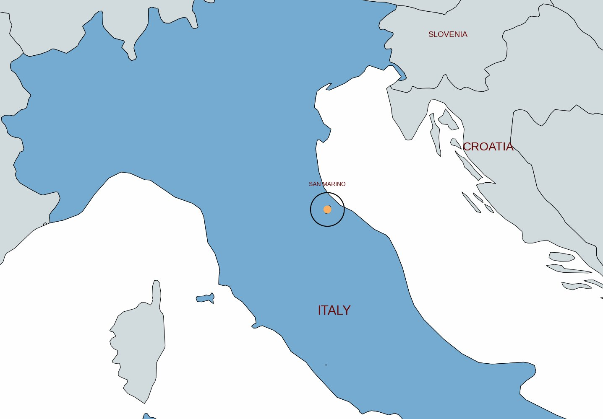
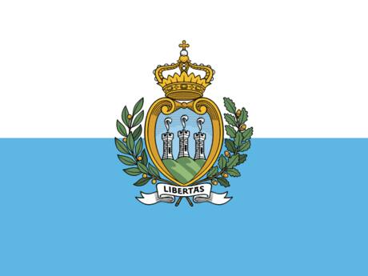
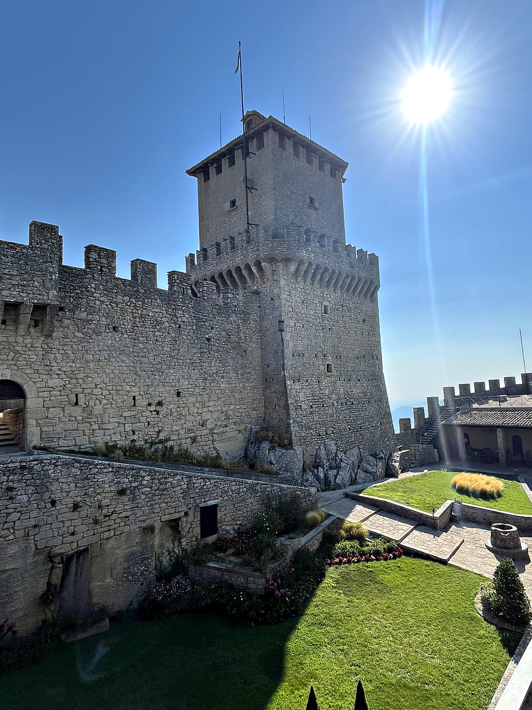
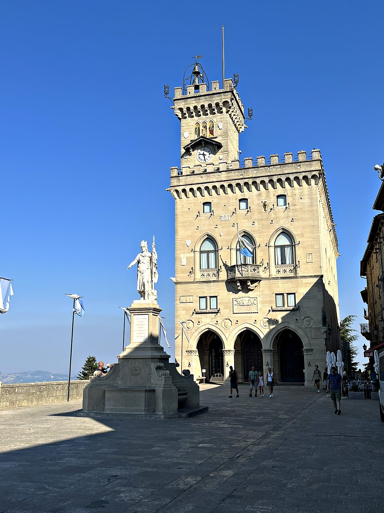
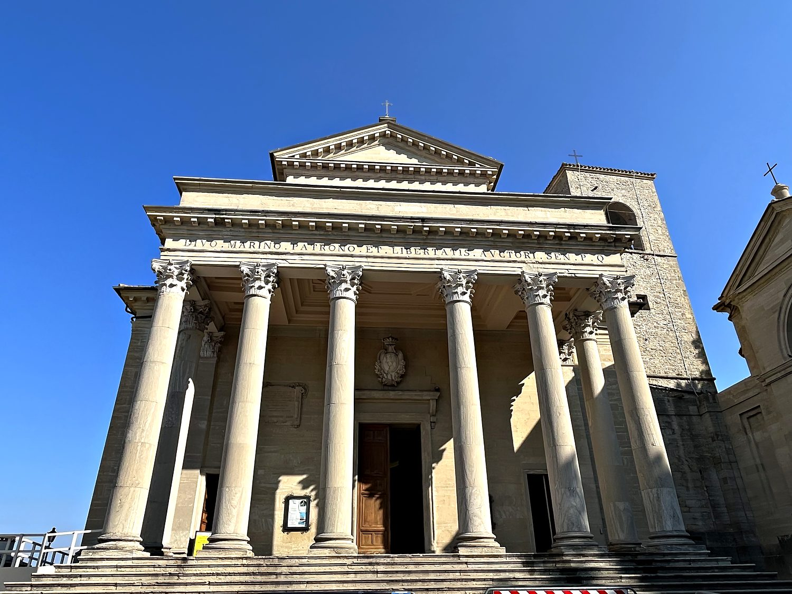

I made a day trip to San Marino in August 2023. Getting there involved a train to the Italian coastal city of Rimini, a bus ticket purchased from a distinctly sketchy tobacco shop (a transaction I found deeply funny), and then a winding bus ride up into the mountains. San Marino comprehensively exceeded my expectations. Perched atop Monte Titano, it is essentially a perfectly preserved medieval fortress town welded to the top of a mountain. Standing up there looking out over the plains far below, I immediately understood why no invader ever thought conquering it was worth the trouble: the defensive position is simply absurd. I wandered the ramparts and towers, ate some pasta and gelato, and got the added surreal bonus of a comic and cosplay convention happening at the same time, which meant the medieval alleys were dotted with people in elaborate costumes. I had ticked off essentially my entire to-do list by half past eleven in the morning.
The tiny capital, also called San Marino, clings to the upper slopes and summit of Monte Titano, a limestone peak that rises abruptly from the rolling hills of north-central Italy. It is a compact tangle of steep cobbled lanes, stone archways, and little squares, threaded together by ramparts and crowned by the three medieval towers that stand along the mountain's rocky crest. The whole historic center is a UNESCO World Heritage Site, and it is genuinely spectacular: from almost anywhere in town, the ground simply falls away to reveal a hazy panorama stretching all the way to the Adriatic coast. It reminded me of a fortified French hill town I love, except dramatically improved by being planted on top of a mountain. Between the state museum, the basilica, and the towers, there is more than enough to fill a morning, and the views alone are worth the trip.

San Marino holds an extraordinary distinction: it is the oldest surviving sovereign republic in the world. According to tradition, it was founded in the year 301 AD by Marinus, a Christian stonemason who fled persecution and established a small monastic community atop Monte Titano. This means the state has, remarkably, maintained a continuous existence for over seventeen centuries. Its survival is a story of geography and diplomacy in equal measure. The mountaintop location made it nearly impossible to attack, and its citizens cannily stayed out of the endless wars between the Italian city-states, princes, and popes, preserving their independence while empires rose and fell around them.

That fierce independence made San Marino something of a symbol of liberty over the centuries. It gave refuge to the Italian revolutionary Giuseppe Garibaldi when he was on the run, and Abraham Lincoln, made an honorary citizen, once wrote admiringly that its history proved a state could be “both peaceful and enduring” without being large. Astonishingly, San Marino was never absorbed into the unified Italy that swallowed every other Italian state in the 19th century. It remains fully independent today as one of the smallest countries on Earth, at just 61 square kilometers and around 34,000 people. It is still governed under a medieval system by two Captains Regent, co-heads of state elected every six months. This a nod to the ancient Roman ideal of shared, term-limited power that the republic has quietly preserved for centuries.
The defining symbol of San Marino that appears on its flag and coat of arms is the trio of medieval fortresses strung along the rocky ridgeline of Monte Titano. The oldest and grandest is the Guaita, pictured here, a squat stone castle dating back to the 11th century that anchors the northern end of the ridge. Beyond it stand the slender Cesta and the small Montale on their own crags. I loved exploring the Guaita's narrow passages and battlements, which reward you with dizzying views in every direction. Together the towers make the country's improbable survival instantly legible. Connected by a scenic footpath along the crest of the mountain, they form a natural fortress that any would-be conqueror would have to be slightly unhinged to assault.

The heart of the republic's civic life is the Piazza della Libertà (Liberty Square) dominated by the Palazzo Pubblico, the neo-Gothic public palace that serves as San Marino's town hall and seat of government. It is here that the country's parliament, the Grand and General Council, convenes, and where the two Captains Regent are ceremonially installed twice a year. In front of the palace stands the Statue of Liberty, a fitting emblem for a nation that has prized its freedom above all else for seventeen hundred years. For all the grandeur of the ceremony that takes place here, the scale is charmingly intimate: this is the working seat of a government that presides over one of the tiniest states in the world, run out of a single handsome palace on a mountaintop square.

Presiding over the town is the Basilica di San Marino, a stately neoclassical church completed in 1838 on the site of a far older one, its facade fronted by a solemn row of Corinthian columns. The basilica is dedicated to Saint Marinus himself (the stonemason-founder of the republic). It holds his relics, making it the spiritual center of the country he is said to have established atop this mountain in the fourth century. Stepping inside from the summer heat into the cool, column-lined nave, it was striking to reflect that this small state still venerates the very man to whom it traces its existence, an unbroken thread of identity connecting a modern European microstate to a refugee craftsman from seventeen centuries ago.
